Chen Liu Zhiyang Huang
1. Problem Definition: Giving an image of a scene in daytime, generate the night version of the scene.
As you can see in the two pictures below, differs from just adjusting the lightness histogram which can be easily done by fix pipeline or manual editory in photoshop, we specially focus on transform the photo of a large scene (e.g. city) taken at daytime into the night version of the scene. Particularly, we want to lighten the light in reasonable possition in the scene (e.g. streetlight, window of the building) while keeping a blurry sketch of the buildings.
2. DataSet
We are planning to use AMOS as it can provide daytime photo and night photo of a same scene with a fix camara, which perfectly matches our task. Currently we have made up pairs of daytime and night from 20 scene.
 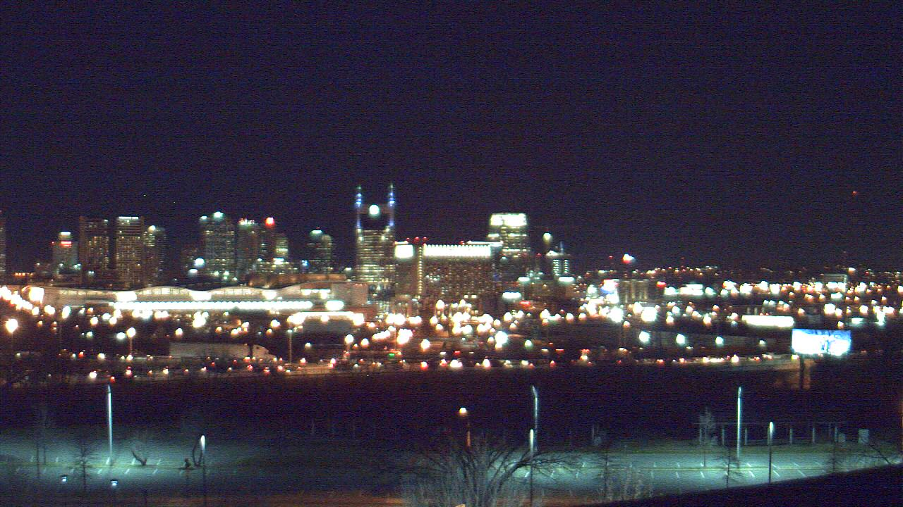
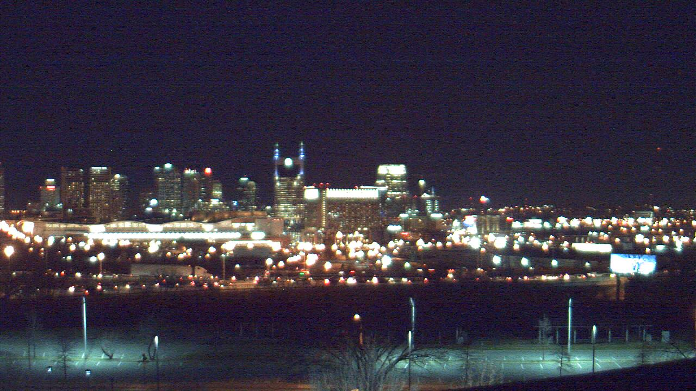
Figure 2. A sample pair in AMOS.
3. Major Challenge
There are two challenges we need to tackle here.
1. Lack of data. The ideal training data would be pairs of images taken from the same fix camera, where one of them is daytime scene, and the other is the night scene. Though the AMOS dataset contains potentially many cameras, but as they are taken from different camera and facing different scene, the focus length of the camera, the quality and resolution of the images and the scene vary a lot. Some cameras in AMOS are not working at night. And some of them are facing a scene that is not interesting, e.g. monitor cameras on highways. We manually search through the data set and only found around 30 cameras which can generate "good" pairs.
2. As we are going to transform an image of a scene from daytime to night, naively, we need to produce an end-to-end network which is hard to train and take very long time to process an image.
The first challenge is a critical problem in our project,
4. Related Work
We show the two most relavant work here, which we use their majority technique for trying to solve the challenge mentioned above.
1. Inceptionism: Going Deeper into Neural Networks [1]
This technique is originally using to visualize what the trained network has learn at each layer. The key idea is that we turn the network upside down and ask it to enhance an input image in such a way as to elicit a particular interpretation, while at the same time impose a prior constraint that the image should have similar statistics to natural images. To be more specified, comparing with training where we are using gradient descend to train the network, now we feed an image into the trained network and tell the network what I want to get, then there will be a loss generated in the output layer and we back propagate the loss to the input layer and adjust the input image according to the propagated gradient, while keeping the network unchange. More detail can be found at [1].
2. Siamese network [2]
The key idea of this paper is to train a convolutional network which takes an image and output a feature vector, such that for similar images, the network outputs similar feature vectors (e.g. small MSE between two feature vectors) for similar images, and output different feature vectors (e.g. large MSE between two feature vectors) for different (irrelavant) images.
3. VGG [3]
This work is one of the state of art work in image classification recently. We can download the trained model, which has been widely used as the initial model for transfer learning in recent papers.
5. Majority Structure and Algorithm

Figure 3: Structure of the network in "Colorful image colorization"
Now we are trying to get the final picture by applying the technique mentioned at [1] to two network we trained or transfer.
1. We build a convolutional network using trained VGG and modified its output layer for the following task: feed a image of a scene, we output the class the the image, which consists of daytime scene, night scene and fake night scene. We generate the image of fake night scene by directly decrease the lightness of the image of a daytime scene (divide the lightness by 8). We fine tune the fully connected layer by a set of training images generated from images from the 30 cameras. We call this fine tune network "dnf-VGG"
2. We use the trained VGG to perform the task proposed in Siamese network which outputs similar feature vectors for similar images and different feature vectors for different images. We keep the first four layers of trained VGG and drop the rest layers. We fine tune the reserve layers by a set of image pairs made up from the 30 cameras, where we can totally make up to 900 negative pairs, and around 900 positive pairs by combination of different day/time of the same camera. We call the fine tune network "Siamese-VGG".
After fine tuning this two network, we apply the technique in Inceptionism to this two networks and get the gradients for modifying the input image. Here, we first feed daytime image into the two network, then record the vector output by "Siamese-VGG". Then by setting the output of the dnf-VGG to be night scene (originally it should be daytime scene), and set the loss function of the "Siamese-VGG" to be the MSE between the output vector and the record feature vector, we propagate the gradient of both network to the image and modify the image by the weighted sum of the gradient.
Here we briefly state our motivation of buiding up these two network. The "dnf-VGG" is using to transform a daytime image to a night-scene-like image, as it will lighten somewhere in the original image and darken the other part. We introduce the fake night image to force the network be able to differential the night image generated by naive method. The "Siamese-VGG" are used to guide the lightening position. We also found that by using low level features (layers) can achieve better result, which probably due to the fact that the lightening position always locate at the region with complex texture. And that could be effectively captured by low level features in the convolutional network.
As you can see in the two pictures below, differs from just adjusting the lightness histogram which can be easily done by fix pipeline or manual editory in photoshop, we specially focus on transform the photo of a large scene (e.g. city) taken at daytime into the night version of the scene. Particularly, we want to lighten the light in reasonable possition in the scene (e.g. streetlight, window of the building) while keeping a blurry sketch of the buildings.
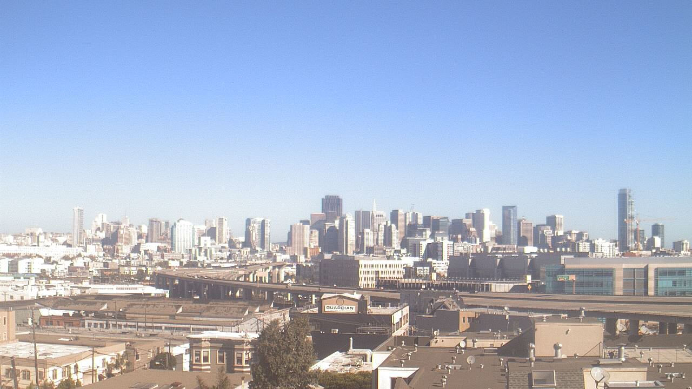
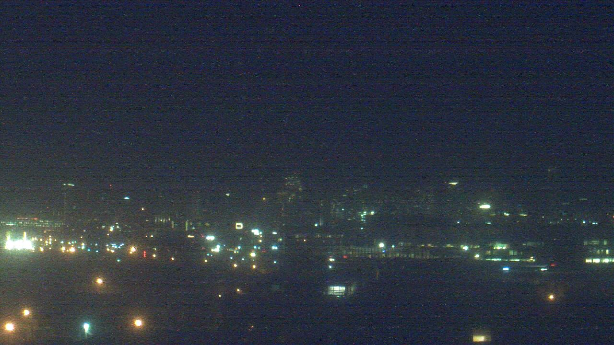√ 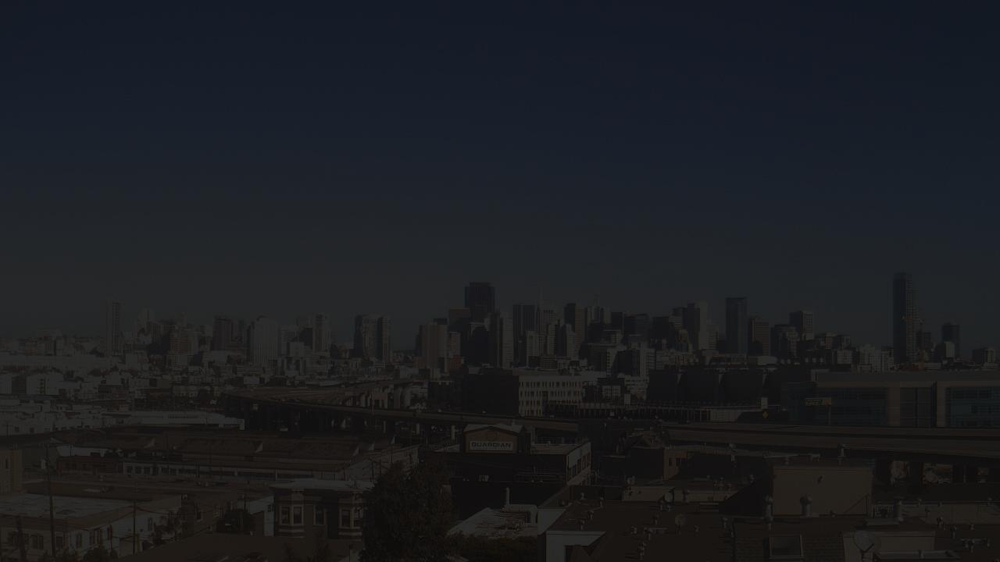X
Figure 1. Daytime image, night image and fake night image.
Figure 1. Daytime image, night image and fake night image.
2. DataSet
We are planning to use AMOS as it can provide daytime photo and night photo of a same scene with a fix camara, which perfectly matches our task. Currently we have made up pairs of daytime and night from 20 scene.
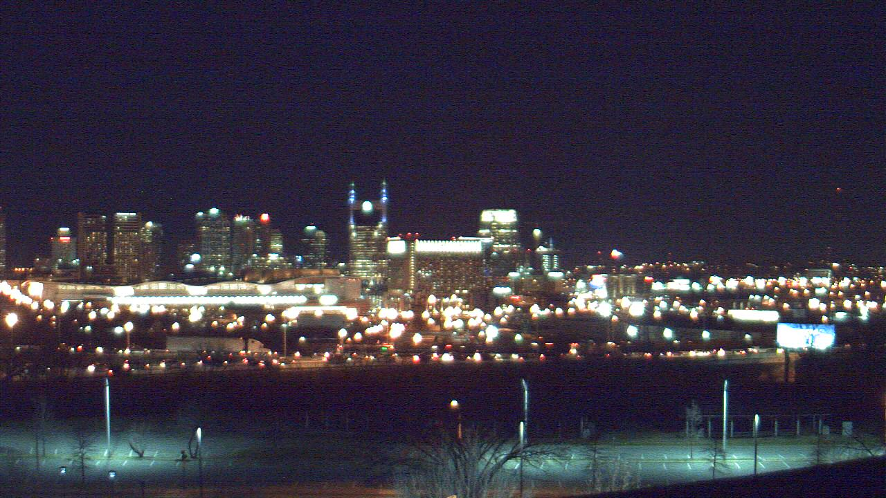Figure 2. A sample pair in AMOS.
3. Major Challenge
There are two challenges we need to tackle here.
1. Lack of data. The ideal training data would be pairs of images taken from the same fix camera, where one of them is daytime scene, and the other is the night scene. Though the AMOS dataset contains potentially many cameras, but as they are taken from different camera and facing different scene, the focus length of the camera, the quality and resolution of the images and the scene vary a lot. Some cameras in AMOS are not working at night. And some of them are facing a scene that is not interesting, e.g. monitor cameras on highways. We manually search through the data set and only found around 30 cameras which can generate "good" pairs.
2. As we are going to transform an image of a scene from daytime to night, naively, we need to produce an end-to-end network which is hard to train and take very long time to process an image.
The first challenge is a critical problem in our project,
4. Related Work
We show the two most relavant work here, which we use their majority technique for trying to solve the challenge mentioned above.
1. Inceptionism: Going Deeper into Neural Networks [1]
This technique is originally using to visualize what the trained network has learn at each layer. The key idea is that we turn the network upside down and ask it to enhance an input image in such a way as to elicit a particular interpretation, while at the same time impose a prior constraint that the image should have similar statistics to natural images. To be more specified, comparing with training where we are using gradient descend to train the network, now we feed an image into the trained network and tell the network what I want to get, then there will be a loss generated in the output layer and we back propagate the loss to the input layer and adjust the input image according to the propagated gradient, while keeping the network unchange. More detail can be found at [1].
2. Siamese network [2]
The key idea of this paper is to train a convolutional network which takes an image and output a feature vector, such that for similar images, the network outputs similar feature vectors (e.g. small MSE between two feature vectors) for similar images, and output different feature vectors (e.g. large MSE between two feature vectors) for different (irrelavant) images.
3. VGG [3]
This work is one of the state of art work in image classification recently. We can download the trained model, which has been widely used as the initial model for transfer learning in recent papers.
5. Majority Structure and Algorithm
In the proposal report we mention that we
decide to use the structure of a recent paper "Colorful image
colorization" as shown in the following picture, where we
are planning to input the RGB(Lab) image and only output the new
lightness
channel (L), and replace the lightness channel of old picture with it.
But due to the lack of data, we decided to abandon this idea and use
other strategies to tackle this task.
Figure 3: Structure of the network in "Colorful image colorization"
Now we are trying to get the final picture by applying the technique mentioned at [1] to two network we trained or transfer.
1. We build a convolutional network using trained VGG and modified its output layer for the following task: feed a image of a scene, we output the class the the image, which consists of daytime scene, night scene and fake night scene. We generate the image of fake night scene by directly decrease the lightness of the image of a daytime scene (divide the lightness by 8). We fine tune the fully connected layer by a set of training images generated from images from the 30 cameras. We call this fine tune network "dnf-VGG"
2. We use the trained VGG to perform the task proposed in Siamese network which outputs similar feature vectors for similar images and different feature vectors for different images. We keep the first four layers of trained VGG and drop the rest layers. We fine tune the reserve layers by a set of image pairs made up from the 30 cameras, where we can totally make up to 900 negative pairs, and around 900 positive pairs by combination of different day/time of the same camera. We call the fine tune network "Siamese-VGG".
After fine tuning this two network, we apply the technique in Inceptionism to this two networks and get the gradients for modifying the input image. Here, we first feed daytime image into the two network, then record the vector output by "Siamese-VGG". Then by setting the output of the dnf-VGG to be night scene (originally it should be daytime scene), and set the loss function of the "Siamese-VGG" to be the MSE between the output vector and the record feature vector, we propagate the gradient of both network to the image and modify the image by the weighted sum of the gradient.
Here we briefly state our motivation of buiding up these two network. The "dnf-VGG" is using to transform a daytime image to a night-scene-like image, as it will lighten somewhere in the original image and darken the other part. We introduce the fake night image to force the network be able to differential the night image generated by naive method. The "Siamese-VGG" are used to guide the lightening position. We also found that by using low level features (layers) can achieve better result, which probably due to the fact that the lightening position always locate at the region with complex texture. And that could be effectively captured by low level features in the convolutional network.
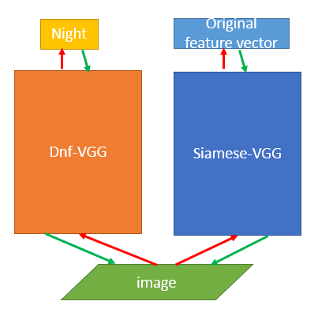
Figure 4. The main structure of our algorithm
Figure 4. The main structure of our algorithm
6. Result
We show serveral result produce by our algorithm as the following
 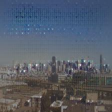 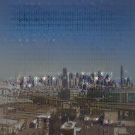 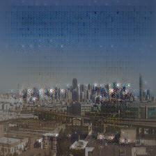
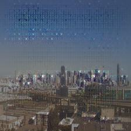 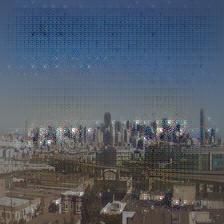 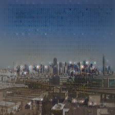
7. Discussion and Future Work
As you can see in the Result section, the propose algorithm did not achieve a good result, though the expected effect has appear, e.g. darken the sky and lighten some position. The main reason could still be the lack of trainning image pairs, which lead to the uncertainty of the lightening position.
The future direction could be applying semi-supervise learning, which we use the current "bad" results generated by our algorithm as negative examples to iteratively fine tune the both network. In this case we expect the added fail output can enrich the training set graduatelly and help the Siamese-VGG obtain a good sense of lighten position.
Reference
[1] http://googleresearch.blogspot.com/2015/06/inceptionism-going-deeper-into-neural.html Inceptionism: Going Deeper into Neural Networks
[2] Chopra S, Hadsell R, LeCun Y. Learning a similarity metric discriminatively, with application to face verification[C]//Computer Vision and Pattern Recognition, 2005. CVPR 2005. IEEE Computer Society Conference on. IEEE, 2005, 1: 539-546.
[3] Simonyan K, Zisserman A. Very deep convolutional networks for large-scale image recognition[J]. arXiv preprint arXiv:1409.1556, 2014.
We show serveral result produce by our algorithm as the following
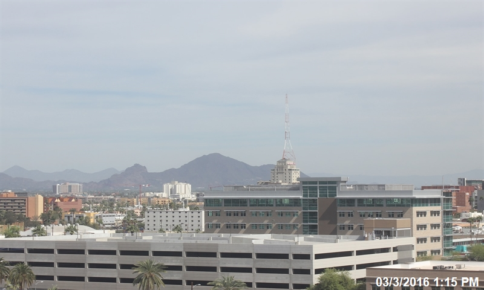 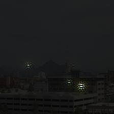
Figure 5. Result 1
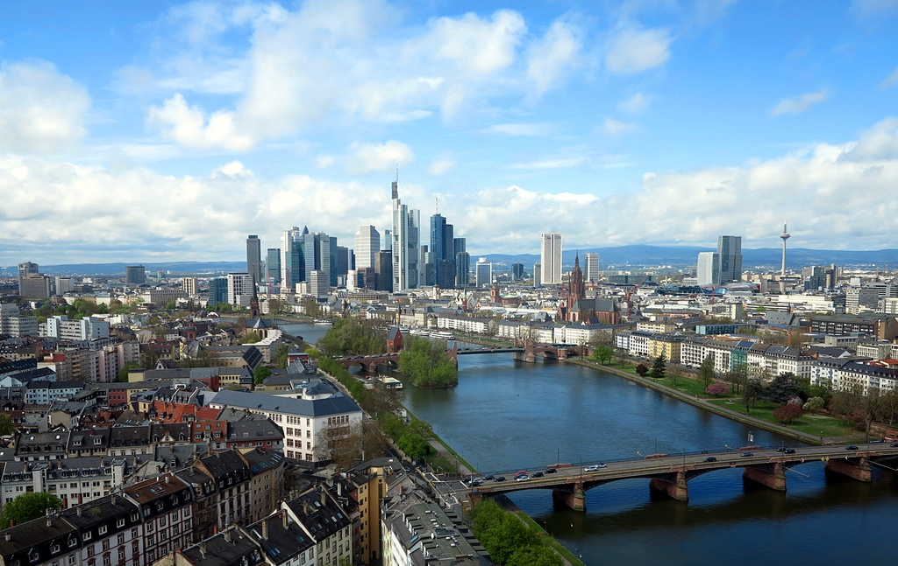 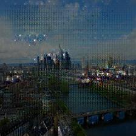
Figure 6. Result 2
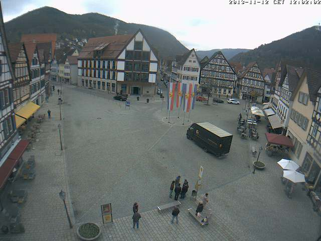 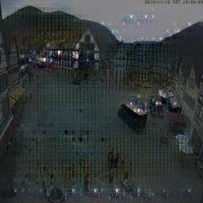
Figure 7. Result 3
Figure 5. Result 1
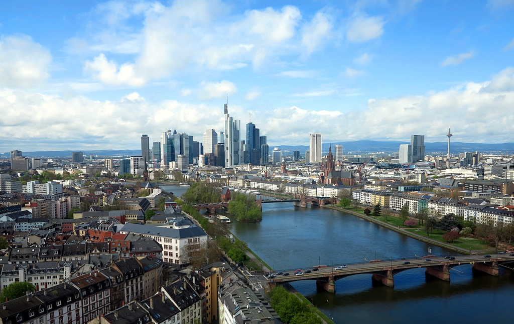 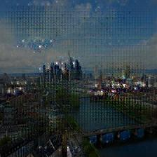
Figure 6. Result 2
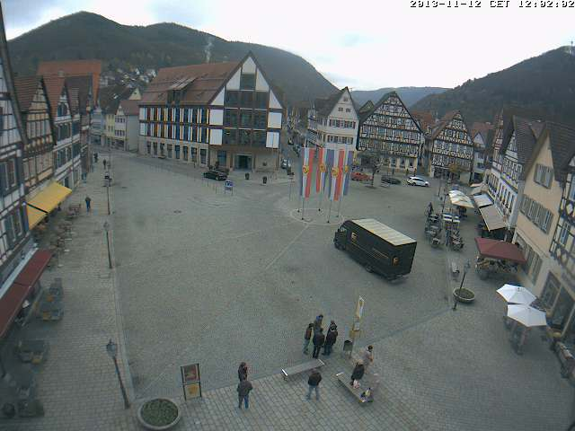 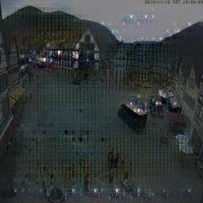
Figure 7. Result 3
We can see that when
we iteratively apply the gradient to modify the image, the image
gradually turn dark, especially the sky part, and some light
appear, though at wrong position.
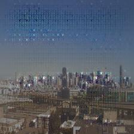 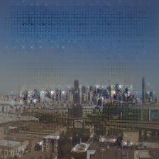 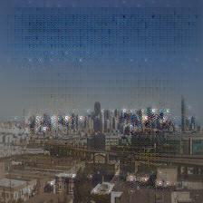7. Discussion and Future Work
As you can see in the Result section, the propose algorithm did not achieve a good result, though the expected effect has appear, e.g. darken the sky and lighten some position. The main reason could still be the lack of trainning image pairs, which lead to the uncertainty of the lightening position.
The future direction could be applying semi-supervise learning, which we use the current "bad" results generated by our algorithm as negative examples to iteratively fine tune the both network. In this case we expect the added fail output can enrich the training set graduatelly and help the Siamese-VGG obtain a good sense of lighten position.
Reference
[1] http://googleresearch.blogspot.com/2015/06/inceptionism-going-deeper-into-neural.html Inceptionism: Going Deeper into Neural Networks
[2] Chopra S, Hadsell R, LeCun Y. Learning a similarity metric discriminatively, with application to face verification[C]//Computer Vision and Pattern Recognition, 2005. CVPR 2005. IEEE Computer Society Conference on. IEEE, 2005, 1: 539-546.
[3] Simonyan K, Zisserman A. Very deep convolutional networks for large-scale image recognition[J]. arXiv preprint arXiv:1409.1556, 2014.